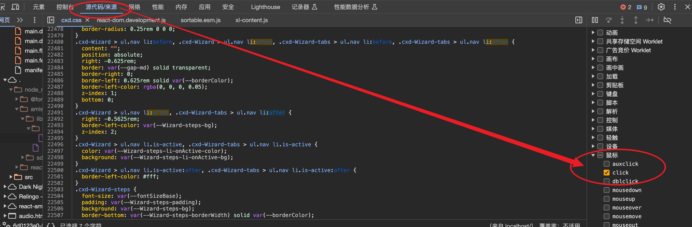

2024-03-09
css
修改于: 2024-03-09CSS媒体查询
CSS 媒体查询（Media Queries）是 CSS3 中的一个特性， 它允许你根据一系列的媒体特性（如屏幕分辨率、视口宽度、打印设备等）来应用不同的样式规则。
比如
@media (min-width: 600px) {
/* 当屏幕宽度至少为 600 像素时，这些样式将被应用 */
body {
font-size: 1.2em;
}
}
如果要在JavaScript中查询, 可通过 window.matchMedia() 方法， 你可以在 JavaScript 中检测媒体查询的条件是否为真， 并根据结果执行相应的代码。 这不是直接在 CSS 中定义媒体查询，而是在 JavaScript 中检测和响应 CSS 媒体查询的条件。 参考: /docs/前端/概念性/Window对象
一些伪类选择器
- hover: 鼠标悬停
- focus: 元素获取焦点(如input键盘选中)
- active: 元素激活, 这个没怎么理解
none与unset区别
- none: 指定没有样式的值或属性. 它常用于清除或禁用某个样式属性的效果
- unset: 将样式属性重置为其默认值. 它会将属性值重置为浏览器默认值或继承值， 根据具体属性的默认行为而定。使用 "unset" 可以撤销已应用的样式，并将其恢复为初始状态
像素单位
- rem
- rem 是相对于根元素（即 <html> 元素）的字体大小来计算的单位
- px
- px 是固定的像素单位
- em
- 类似于 rem， em 也是相对于父元素的字体大小计算的单位。 不同之处在于，em 是相对于最近的父级元素的字体大小来计算的。 如果没有显式设置父元素的字体大小，em 单位将继承自上级元素的字体大小。
- %
- 百分比单位是相对于父元素的尺寸来计算的。 例如，设置一个元素的宽度为 50%，表示该元素的宽度将是其父元素宽度的一半。
- vw 和 vh
- vw 和 vh 分别表示视口宽度（Viewport Width）和视口高度（Viewport Height）的百分比单位。 例如，1vw 表示视口宽度的 1%。这些单位用于创建响应式布局，可以根据视口的大小来确定元素的尺寸。
- ex（相对于小写字母 "x" 的高度）、ch（相对于数字 "0" 的宽度）等
- 这些单位相对于字体相关的尺寸进行计算。
- 绝对单位
- 除了相对单位，CSS 还支持一些绝对单位，如 cm（厘米）、mm（毫米）、in（英寸）、pt（磅）等。 这些单位在打印和物理媒体方面比较常用。
导入其他css
比如在 theme.css 中导入 checkbox.css:
/* theme.css */ @import url(checkbox.css);
chrome支持前端断点
比如按钮点击后的断点
